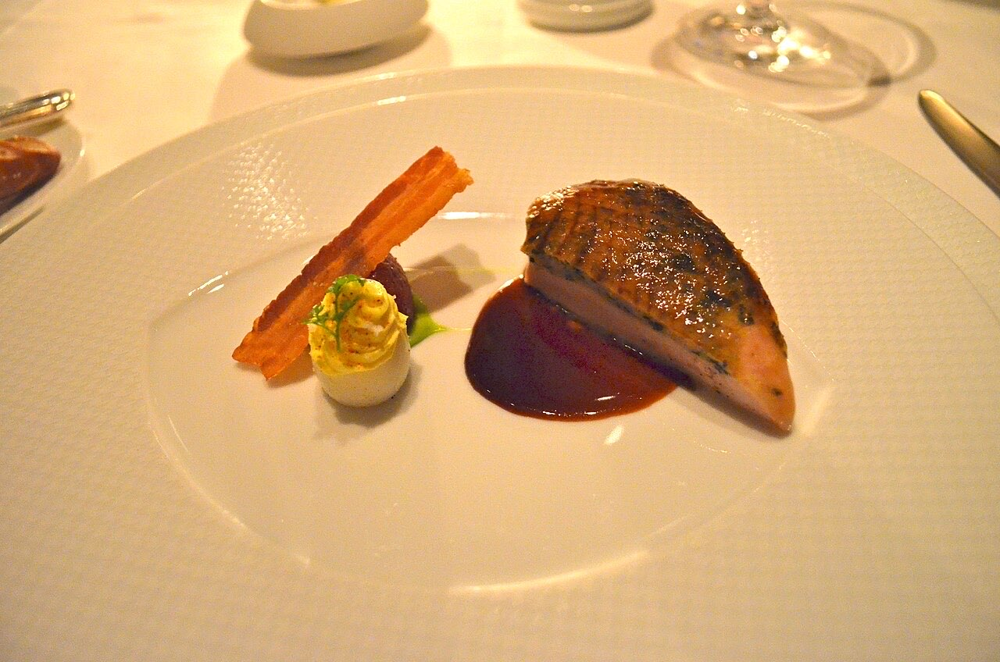
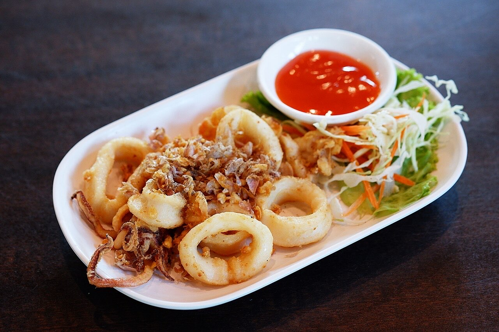

Fotografias ilustrativas — no site final usamos as vossas.
Leia o QR na mesa e peça do telemóvel.
Também sardinhas, lulas fritas e rabanadas para fechar.
4,7★ em 586 avaliações no Google. Opções sem glúten.
O Ar Belo é um restaurante de cozinha tradicional portuguesa e ambiente familiar, na Rua de Belos Ares, em Mesão Frio. Serve almoços de terça a domingo, com bacalhau, vitela assada e sardinhas.


Fotografias ilustrativas — no site final usamos as vossas.
Novo · Pedidos por QR code
Menos espera nas horas de ponta, menos enganos nos pedidos e a equipa livre para servir.
Pedido de reserva
Escolha o dia e a hora — o pedido chega por WhatsApp e confirmamos logo.
↑ Assim chegaria a mensagem ao vosso WhatsApp. (Nesta demonstração nada é enviado.)
Onde estamos
| Ter–Dom | 12:00–15:00 |
|---|
Proposta para Ar Belo
Esta página foi feita de propósito para Ar Belo por João Machado, programador web aqui de Guimarães. Inclui:
Eu trato do alojamento e da manutenção. Sem compromisso.